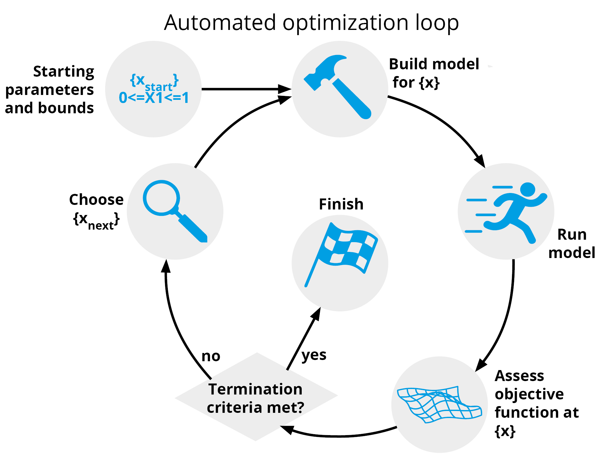

Inverse Optimisation for Topas
This repository enables users to transform any radiation transport model in TopasMC, into an optimisation problem, hence enabling users to apply the power of formal mathematical optimisation with the well established use cases for Monte Carlo modelling.
To install:
pip install TopasOpt
For help getting an appropriate environment set up, see here The quickest way to get started is to go through the worked examples.
